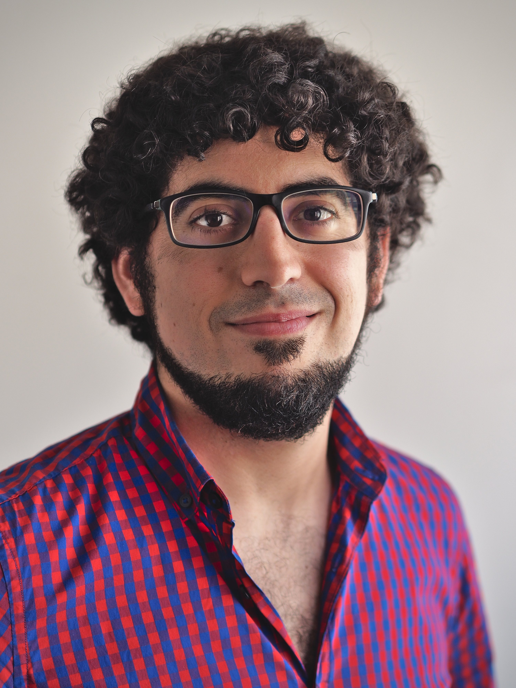

I am a historical laboratory phonologist at the Centre National de la Recherche Scientifique at IKER UMR5478. I specialize in phonetically-based sound change, typologically rare sound patterns, metathesis, and the reconstruction of Proto-Basque. I pursue an interdisciplinary approach to the study of sound change by combining historical linguistics, theoretical phonology, experimental phonetics, phonological typology, philology, sociolinguistics, and contact linguistics.
I have worked on a wide range of topics including metathesis, u-fronting, nasalized aspiration, consonant cluster resolution, accentual shifts, final obstruent voicing, and acoustic descriptions of endangered dialects. You can find most of my papers in the publications section of this website.
You might remember me from my time at the Institute of Phonetics and Speech Processing of the University of Munich, the Phonetics Lab of the University of the Basque Country, or the briefer periods I spent at the City University of New York or the Complutense University of Madrid.
I tend to pronounce my name [ˈan̪deɾ eˈɣ̞urt͡s̻eɣ̞i], but it can also be pronounced [ˈan̪der eɣ̞urˈt͡s̻eɣ̞i]. Of course, I have answered to many other names, including [ˈʔandɐ], [ˈændɚ], [ˈændə(ɹ)], [ˈɑn.dər], [ˈɑndɛɾs] and even [anˈden]. We don’t have the space here for the variants of my last name, but that one runs wild. You can choose any variant or create a new one, as I’m happy to be the source of linguistic variation.
If my name rings a bell but my face and work don’t match with it, note that there is yet another linguist that answers to A. Egurtzegi: Check out my brother’s work on psycholinguistics at Uni Zurich.
In press. Metathesis. In Ledgeway et al. (eds.), The Wiley Blackwell Companion to Diachronic Linguistics. Wiley-Blackwell.
2023 [with J. Blevins] Refining explanation in Evolutionary Phonology: Macro-typologies and targeted typologies in action. Linguistic Typology 27.2, 289–311.
2023 [with G. Elordieta] A history of the Basque prosodic systems. Diachronica 40.1, 30-72.
2022 [with D. Krajewska & E. Zuloaga] Sibilant mergers in 18th-century Basque: A quantitative study. Phonological Data & Analysis 4.5, 1–31.
2020 [with J. Blevins & J. Ullrich] Final obstruent voicing in Lakota: Phonetic evidence and phonological implications. Language 96.2, 294–337.
2020 [with C. Carignan] An acoustic description of Mixean Basque. Journal of the Acoustical Society of America 147.4, 2791–2802. [Supplementary materials ].
2018 On the phonemic status of nasalized /h̃/ in Modern Zuberoan Basque. Linguistics 56.6, 1353–1367.
2017 [with J. Blevins] Unexpected obstruent loss in initial obstruent-sonorant clusters: an apparent example from Basque. Phonology 34.3, 507–522.
2017 Phonetically conditioned sound change: Contact induced /u/-fronting in Zuberoan Basque. Diachronica 34.3, 331–367.
CNRS-IKER. Campus de la Nive, Château-Neuf; 15, Place Paul Bert 64100 Bayonne, France
Tuesday 10:00 to 13:00
Thursday 10:00 to 13:00